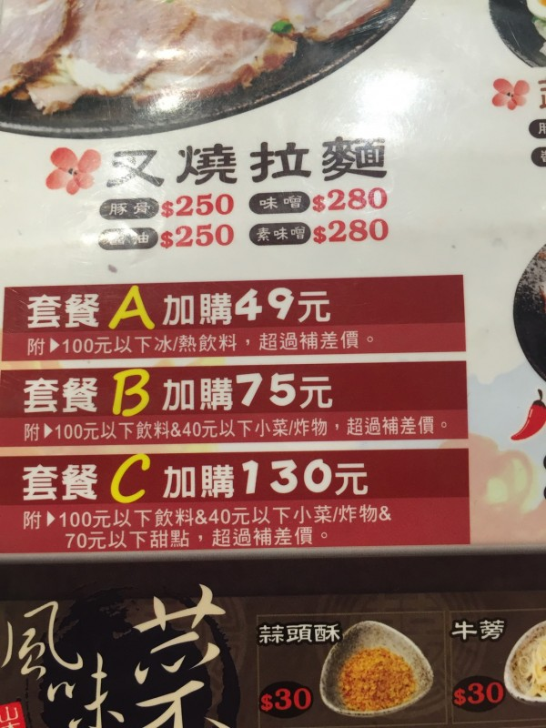
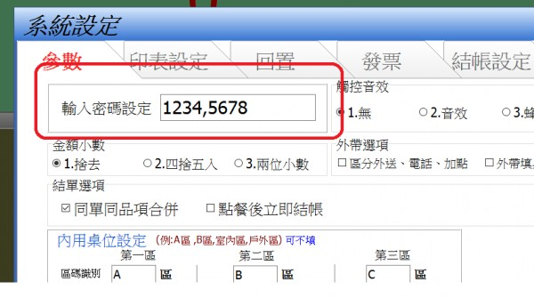
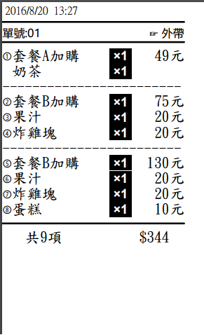

您好，我是剛購買的客戶 evxxxxx
第一個問題是
打烊的密碼能否和設定的密碼不一樣
我這樣會讓員工改到我的密碼
第二個問題以下的套餐要如何設定

您好，有些細節的部份我有mail給您，在請您看一下
您好，我是剛購買的客戶 evxxxxx
第一個問題是
打烊的密碼能否和設定的密碼不一樣
我這樣會讓員工改到我的密碼
第二個問題以下的套餐要如何設定

您好
1.站長修改了程式 加上頓號,即是兩組密碼

如上例1234,5678就變成兩組密碼 1234為設定密碼 5678為打烊密碼 ,5678這組密碼的權限較小 僅能打烊 無法查閱統計報表資料
請至首頁下載更新
2.
假定
飲料:紅茶 綠茶為100元 果汁120(須補20差價)
小菜炸物:蒜頭酥;牛蒡絲;40元,炸雞塊60元(須補20差價)
甜點:冰淇淋70;蛋糕80(須補10差價)
{主選單}
套餐加購類
套餐A加購[模式:套餐][$49]
套餐A加購[$49]
套餐飲料
[品項名稱]紅茶;奶茶;綠茶;果汁[$20];
中杯;大杯[$5][顏色:16737843];
冰[顏色:16763904]; 溫[顏色:65535]; 熱 [顏色:255];
套餐B加購[模式:套餐][$75]
套餐B加購[$75]
套餐飲料
[品項名稱]紅茶;奶茶;綠茶;果汁[$20];
中杯;大杯[$5][顏色:16737843];
冰[顏色:16763904]; 溫[顏色:65535]; 熱 [顏色:255];
套餐小菜
[品項名稱]蒜頭酥;牛蒡絲;炸雞塊[$20];
套餐C加購[模式:套餐][$130]
套餐B加購[$130]
套餐飲料
[品項名稱]紅茶;奶茶;綠茶;果汁[$20];
中杯;大杯[$5][顏色:16737843];
冰[顏色:16763904]; 溫[顏色:65535]; 熱 [顏色:255];
套餐小菜
[品項名稱]蒜頭酥;牛蒡絲;炸雞塊[$20];
甜點
[品項名稱]冰淇淋;蛋糕[$10];

套餐畫線設定在單據樣式中
請參考
http://ico.tw/QA/index.php?qa=818